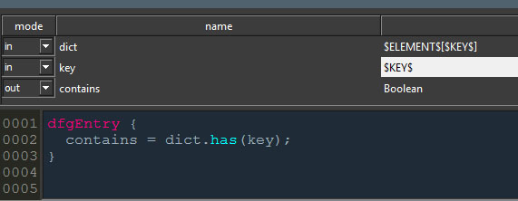

Polymorphic nodes¶
注釈
If you are looking for a less technical explanation please refer to Polymorphic （多態性）ノード in the user guide.
Polymorphism in Canvas is implemented as part of the code generation step. Nodes which have polymorphic types are either a) a KL function node which has a port with a polymorphic type specification or b) a subgraph which in turn uses a polymorphic KL function. Polymorphic nodes are versatile utilities which can be used with a variety of data types. It’s due to the compiler however to validate if the resulting generated code will work. Thus you CAN CREATE ERRONEOUS GRAPHS using polymorphism.
注釈
The KL2DFG command line utility will create polymorphic presets depending on the configuration. Please see KL2DFG Command line utility for more information.
Type resolution for polymorphic nodes is recursive. Canvas uses a type mapping mechanism for polymorphic KL functions.
Polymorphic type specification syntax¶
To define a polymorphic port in a KL function use the following syntax:
$LABEL$ // single polymorphic type
$LABEL$[] // array polymorphic type
$LABEL1$[$LABEL2$] // dictionary polymorphic type
The example above implements a polymorphic array push node (which is already part of the factory presets, of course). Connecting an array to the array or result port will result in the element port to resolve, and vice versa.
The example above implements a polymorphic dictionary lookup node (which is also of course part of the factory presets). Both element and key polymorphic types will resolve as soon as you connect a dictionary to it.